TỔNG QUAN
Một lần mượn sách, ba lớp kiểm chứng
- Mô hình 3 lớp kiểm chứng: Unit Test → Coverage Gate → CI/CD Pipeline.
- Case study thực chiến: Quản lý mượn sách & chính sách phạt trễ hạn thư viện.
- Seminar Kiểm thử phần mềm · Nhóm 09 · Cập nhật báo cáo Tuần 06.
CÂU HỎI XUYÊN SUỐT
Trả lời câu hỏi cốt lõi: 'Test chạy xanh và Coverage 100% đã chắc chắn mã nguồn không còn lỗi?'


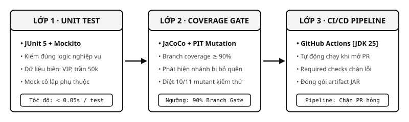
NHÓM THỰC HIỆN
Thành viên & Phân công trách nhiệm
Nguyễn Bảo An
23120207
Unit Test Core
JUnit 5, Mockito, Parameterized Tests, AAA Pattern & Video A.
Phạm Quang Vinh
23120202
CI/CD & Benchmark
GitHub Actions, Build JDK 25, Đo cache Maven & Video D.
Trương Nhật Đạt
23120231
Code Coverage
JaCoCo 90% branch gate, PIT Mutation Testing & Video B.
Nguyễn Lê Thế Vinh
23120190
Case Study & REST
Spring Data JPA, H2 database, HTTP smoke test & Video C.
Ngô Gia An
23120205
Trưởng nhóm & AI/Paper
Gemini sinh test, tái hiện CoverUp, Pynguin & Video E.
CAM KẾT MINH BẠCH & ĐÓNG GÓP THỰC TẾ
100% thành viên có commit và Pull Request thật trên Git; mỗi người tự quay và thuyết minh video demo công cụ phụ trách.
MỤC TIÊU
4 Trụ cột người học sẽ thực hành
- 1. Viết Unit Test chuẩn: Cấu trúc AAA, nguyên lý FIRST và kỹ thuật quét dữ liệu biên.
- 2. Đo lường bản chất: Phân biệt Line vs Branch; nhận diện bẫy độ phủ bằng PIT Mutation.
- 3. Chốt chặn CI tự động: Cấu hình Gate làm fail build ngay khi Branch < 90% trên GitHub Actions.
- 4. Đánh giá kiểm thử AI: Dùng Gemini 3.6 tìm gap, sinh test và đối chứng kết quả bằng oracle.
ĐIỂM THEN CHỐT
Mục tiêu: Giúp người học tự xây dựng được hệ thống kiểm thử tự động, không chạy theo số liệu hình thức.
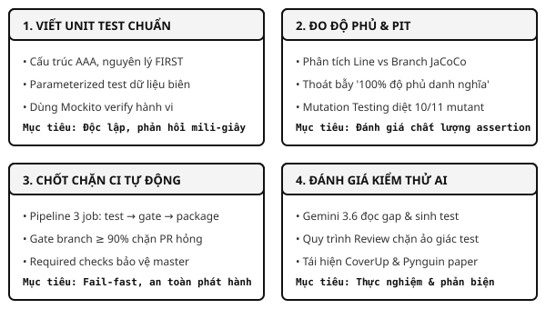
CASE STUDY
Nghiệp vụ tính phí phạt & mượn sách
- Hạng NORMAL: Đơn giá 2.000 VND/ngày; không có ngày gia hạn; mức trần tối đa 50.000 VND.
- Hạng VIP: Miễn phí 2 ngày đầu, sau đó 1.000 VND/ngày; mức trần tối đa 50.000 VND.
- Quy tắc mượn sách: Tối đa 3 cuốn/thành viên, không nợ phí phạt cũ, sách đang sẵn có.
- Dữ liệu: H2 in-memory sạch, nạp tự động lúc khởi động và reset khi restart.
ĐIỂM THEN CHỐT
Ranh giới kiểm thử: 0, 1, 2 ngày; chạm trần 25 ngày (NORMAL) và 52 ngày (VIP); ngày âm ném ngoại lệ.
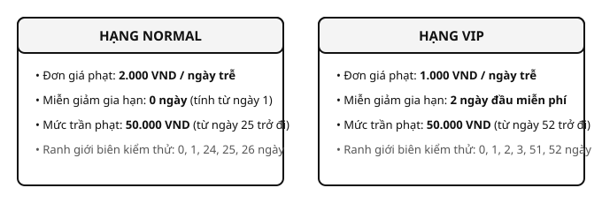
VIDEO DEMO C
Video C: Chạy ứng dụng & 7 Kịch bản HTTP Smoke Test
- Người thực hiện: Nguyễn Lê Thế Vinh (23120190) · Thời lượng: 3 – 5 phút.
- 00:00 - Setup: Khởi chạy JAR thật trên JDK 25, kiểm tra dữ liệu mẫu H2 in-memory.
- 01:00 - Demo 7 request: Chạy
scripts/demo_case_study.sh: 201 Created, 409 UNAVAILABLE, 404 NOT_FOUND, 409 UNPAID_FINE. - 03:30 - Đối chiếu test: Chạy
LoanFlowEdgeCaseTestchứng minh HTTP curl khớp 100% với test tự động.
ĐIỂM THEN CHỐT
Trạng thái: Đã quay xong video · Link YouTube: [Sẽ bổ sung URL sau] · Mã lệnh: scripts/demo_case_study.sh
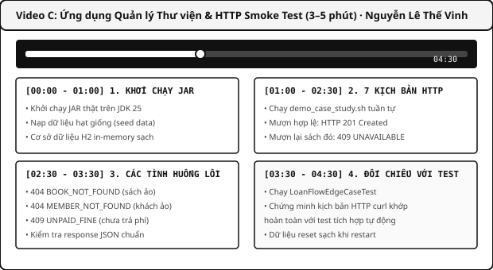
UNIT TEST
Cấu trúc Arrange → Act → Assert (AAA)
- Arrange: Khởi tạo đối tượng & thiết lập dữ liệu giả định (Khách VIP trễ 3 ngày).
- Act: Kích hoạt duy nhất phương thức nghiệp vụ cần kiểm thử (
calculate). - Assert: So sánh kết quả thực tế với giá trị kỳ vọng (1.000 VND).
- Lưu ý BigDecimal: Bắt buộc dùng
isEqualByComparingTođể không bị lỗi so sánh scale.
var calculator = new FineCalculator();
var amount = calculator.calculate(3, MemberTier.VIP);
assertThat(amount).isEqualByComparingTo("1000");ĐIỂM THEN CHỐT
Quy tắc vàng: Mỗi ca test chỉ tập trung kiểm chứng duy nhất một hành vi nghiệp vụ độc lập.
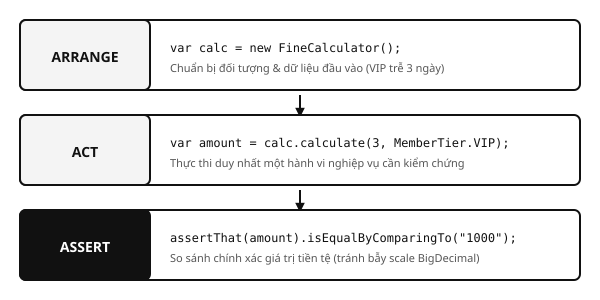
UNIT TEST
Nguyên lý F.I.R.S.T & Bẫy kiểm thử
- F - Fast & I - Independent: Chạy milli-giây, độc lập thứ tự thực thi.
- R - Repeatable: Tiêm
Clock.fixedgiữ thời gian bất biến, không phụ thuộc ngày giờ hệ thống. - S - Self-validating & T - Timely: Tự động pass/fail; viết đồng thời với mã nguồn.
- 2 Bẫy phổ biến: Test thiếu assert (vẫn xanh vô nghĩa) và Mock quá đà (chỉ test lại stub).
ĐIỂM THEN CHỐT
Giải pháp: Tiêm Clock giả lập và luôn kiểm tra chất lượng câu lệnh assert bằng Mutation Testing.
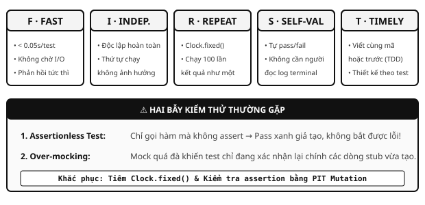
UNIT TEST
UT-1: Chạy kiểm thử & Đọc báo cáo Surefire
- Lệnh thực thi:
./mvnw -B -ntp clean test(cờ batch mode tối ưu cho CI/terminal). - Quy mô bộ test: 39 tests core ban đầu → 49 tests sau khi tích hợp AI (PR #13).
- Surefire metrics: Phân biệt rõ Failure (sai assertion logic) vs Error (sập ngoại lệ JVM).
- Tương thích: Đã chạy pass 100% trên cả JDK 25 mới nhất và JDK 21 LTS.
ĐIỂM THEN CHỐT
Kết quả: 49/49 tests passed, 0 failures, 0 errors, thời gian thực thi toàn bộ suite dưới 1.5 giây.
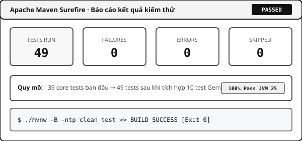
UNIT TEST
UT-2: Parameterized Test (@CsvFileSource) & TDD
- @CsvFileSource: Tách dữ liệu ra file ngoài, kiểm tra quét ranh giới 24, 25, 26 ngày trễ.
- 4 Vòng TDD đỏ – xanh:
- • Vòng 1: Tính phí phạt cơ bản theo ngày trễ.
- • Vòng 2: Áp dụng mức trần tối đa 50.000 VND.
- • Vòng 3: Bổ sung chính sách miễn 2 ngày đầu cho khách VIP.
- • Vòng 4: Xử lý ngoại lệ dữ liệu biên (ngày âm & null).
daysLate,tier,expected
24,NORMAL,48000
25,NORMAL,50000
26,NORMAL,50000ĐIỂM THEN CHỐT
Giá trị: 1 hàm test tự động sinh 15 ca kiểm thử bao quát toàn bộ ranh giới, lưu vết log từng vòng TDD.
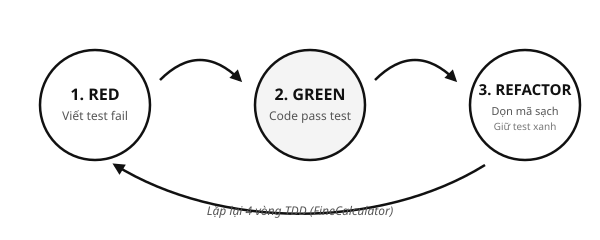
UNIT TEST
UT-3: Sáu tình huống mượn sách & Mockito
- 5 Ca ngoại lệ: Sách ảo, sách đang mượn, thành viên ảo, mượn quá 3 cuốn, còn nợ phí phạt.
- 1 Ca thành công: Đủ điều kiện và lưu phiếu mượn hợp lệ xuống cơ sở dữ liệu.
- Kỹ thuật Mockito chuyên sâu:
- •
verify(loanRepo, never()).save(...): Chặn rò rỉ dữ liệu khi gặp lỗi. - •
ArgumentCaptor: Bắt và kiểm tra chi tiết trạng thái phiếu mượn được lưu.
ĐIỂM THEN CHỐT
Tác dụng: Cô lập hoàn toàn LoanService khỏi I/O và DB, thời gian chạy toàn bộ 6 ca dưới 0.15s.
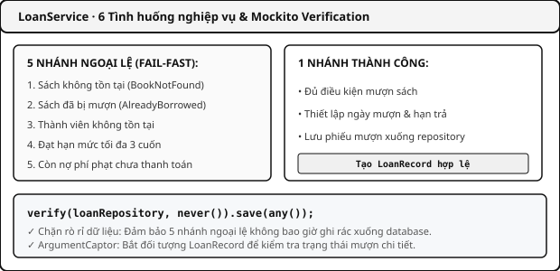
UNIT TEST
Mock kiểm được đến đâu? Kim tự tháp test
- Unit Test (Đáy tháp): Mock cô lập, phản hồi milli-giây, tập trung kiểm quyết định nghiệp vụ.
- Web Slice Test: Dùng
@WebMvcTestkiểm tra HTTP status và validation với service giả lập. - Integration & Smoke Test (Đỉnh tháp): Nối DB H2 thật; chạy JAR hoàn chỉnh với 5 kịch bản curl.
- Bài học: Unit test chạy nhanh và rẻ; Integration test chứng minh các mảnh ghép chạy thật.
ĐIỂM THEN CHỐT
Chiến lược: Kết hợp hài hòa các tầng kiểm thử để vừa có tốc độ phản hồi nhanh, vừa có độ tin cậy thực tế.
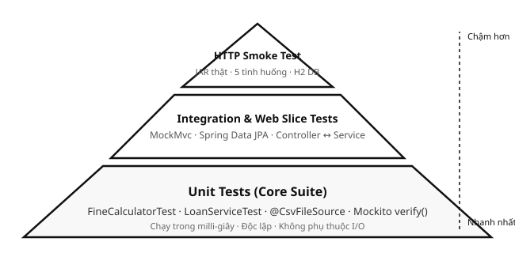
VIDEO DEMO A
Video A: Unit Test với JUnit 5 & Mockito (5–7 phút)
- Người thực hiện: Nguyễn Bảo An (23120207) · Thời lượng: 5 – 7 phút.
- 00:00 - Setup: Cấu trúc project Java 25, Maven Wrapper, thư viện JUnit 5 và Mockito 5.
- 01:00 - AAA & Surefire: Quy tắc AAA, chạy FineCalculatorTest, đọc báo cáo XML.
- 02:15 - Data-driven: Tách file CSV, chạy 15 ca biên tự động với @ParameterizedTest.
- 03:45 - Mockito: Cô lập repo, verify(never) ca lỗi và ArgumentCaptor ca thành công.
- 05:15 - Anti-patterns: Mổ xẻ Train Wreck Mocking và Self-fulfilling Prophecy.
ĐIỂM THEN CHỐT
Trạng thái: Đã quay xong video · Link YouTube: [Sẽ bổ sung URL sau] · Mã lệnh: ./mvnw test
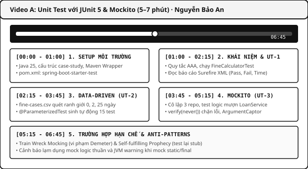
CODE COVERAGE
Line Coverage vs. Branch Coverage
- Line Coverage: Đếm số dòng đã chạy; dễ ngộ nhận khi dòng chứa toán tử điều kiện (
? :,&&). - Branch Coverage: Đếm trọn vẹn cả 2 hướng True và False của mọi ngã rẽ logic.
- Nghịch lý: Đạt 100% Line Coverage vẫn có thể bỏ sót 50% nhánh điều kiện biên!
- Định dạng JaCoCo: HTML trực quan cho lập trình viên; XML cho CI Gate phân tích tự động.
ĐIỂM THEN CHỐT
Kết luận: Line Coverage chỉ là điều kiện cần; Branch Coverage mới phản ánh độ bao quát thực tế.
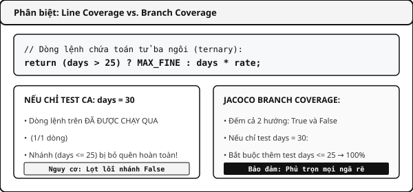
CODE COVERAGE
CC-1/2: Quy trình Đo trước → Bổ sung → Đo lại
- Baseline ban đầu: FineCalculator chỉ đạt 50% branch (thiếu ca ngày âm, ca chạm trần).
- Bổ sung & Đo lại: Viết thêm các ca kiểm thử biên → vươn lên 100% branch.
- Lệnh thực thi:
- • Đo baseline:
./mvnw -f case-study/pom.xml -Pbaseline clean verify - • Đo đầy đủ:
./mvnw -f case-study/pom.xml clean verify
ĐIỂM THEN CHỐT
Minh chứng: Ảnh chụp báo cáo JaCoCo HTML thật trích xuất từ thư mục evidence chứng minh độ phủ 100%.
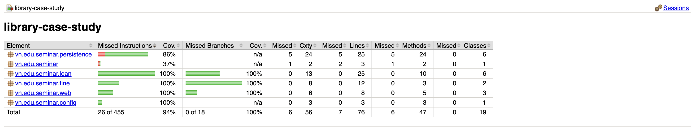
CODE COVERAGE
CC-3: Cấu hình Gate chặn bản thiếu test
- Quy tắc Gate: Cấu hình
BRANCH COVEREDRATIO >= 0.90cho FineCalculator. - Cơ chế Fail-Fast: Nếu tỷ lệ < 90%, JaCoCo ngắt lệnh và trả về Exit Code 1.
- Thực nghiệm Gate:
./mvnw -f case-study/pom.xml -Pbaseline -Dcoverage.gate.skip=false clean verify- • Kết quả: Văng lỗi
BUILD FAILUREngay lập tức vì 50% < 90%.
<limit>
<counter>BRANCH</counter>
<value>COVEREDRATIO</value>
<minimum>0.90</minimum>
</limit>ĐIỂM THEN CHỐT
Ý nghĩa: Gate ngăn chặn triệt để tình trạng lập trình viên đẩy mã nguồn thiếu test lên kho chung.
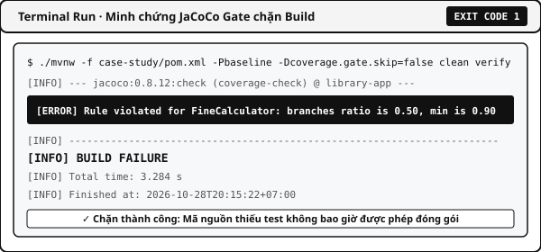
CODE COVERAGE
100% Branch vẫn lọt lỗi: Mutation Testing
- Thử nghiệm bẫy: Bộ test đi đủ nhánh nhưng cố tình bỏ assert tiền phạt → JaCoCo vẫn báo 100% Branch!
- Giải pháp PIT Mutation: Tự động cấy lỗi đột biến (đổi toán tử, return 0).
- Kết quả thực nghiệm:
- • Bộ test yếu (bẫy): Chỉ diệt được 3/11 mutant (chỉ bắt được ca văng ngoại lệ).
- • Bộ test chuẩn của nhóm: Diệt được 10/11 mutant (mutant còn sống là tương đương).
ĐIỂM THEN CHỐT
Bài học: Coverage chỉ đo mã được chạy; PIT Mutation Testing mới đo lường chất lượng câu lệnh assert.
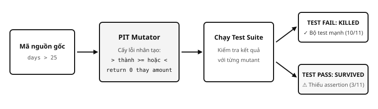
VIDEO DEMO B
Video B: Code Coverage & PIT Mutation Testing (8–9 phút)
- Người thực hiện: Trương Nhật Đạt (23120231) · Thời lượng: 8 – 9 phút.
- 00:00 - Setup: Cấu hình plugin JaCoCo agent và PIT trong
pom.xml. - 01:00 - 6 Loại coverage: Minh họa trên
LoanPeriodPolicy(Statement, Decision, MC/DC). - 03:00 - Trước / Sau: So sánh baseline 50% vs Bộ đầy đủ 100% Branch Coverage.
- 04:00 - Gate & PIT: Demo Gate văng Exit 1, test bẫy 100% branch nhưng PIT chỉ diệt 3/11 mutant.
- 06:00 - Hạn chế: Quyết định ẩn trong
Math.min(), mutant tương đương và chi phí thời gian.
ĐIỂM THEN CHỐT
Trạng thái: Đã quay xong video · Link YouTube: [Sẽ bổ sung URL sau] · Lệnh: clean verify, pitest:mutationCoverage
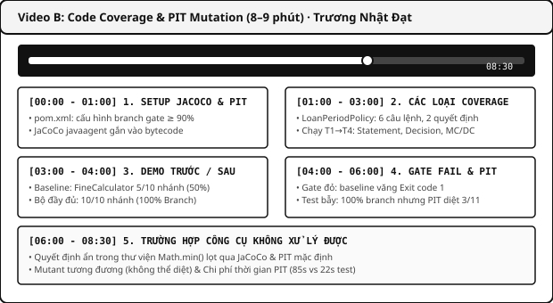
CI/CD
CI, Continuous Delivery, Continuous Deployment
- Continuous Integration (CI): Mỗi lần push/PR, tự động build JDK 25 và chạy test. Phát hiện lỗi ngay.
- Continuous Delivery: Sau CI, tự động đóng gói Artifact (JAR) sẵn sàng phát hành; triển khai do người duyệt.
- Continuous Deployment: Tự động đẩy thẳng lên server chạy thật không cần người duyệt.
- Nguyên lý: Càng lên mức tự động hóa cao, càng đòi hỏi bộ test và gate tin cậy tuyệt đối.
ĐIỂM THEN CHỐT
Phân cấp: CI bảo vệ mã nguồn → Delivery bảo vệ bản dựng → Deployment bảo vệ môi trường vận hành.
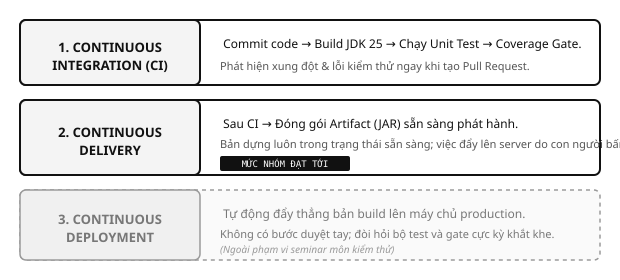
CI/CD
Phạm vi CI/CD nhóm triển khai thực tế
- CI · HOÀN THÀNH 100%: Tự chạy test JDK 25 và kiểm tra Branch Gate ≥ 90% trên mọi Pull Request.
- Continuous Delivery · ĐẠT MỨC ARTIFACT: Tự đóng gói JAR, đính kèm báo cáo Surefire & JaCoCo.
- Continuous Deployment · KHÔNG THỰC HIỆN: Đề tài tập trung kiểm thử phần mềm, không triển khai server.
- Mở rộng: Nếu cần deploy, bổ sung job deploy sau package với điều kiện nhánh master + approval.
ĐIỂM THEN CHỐT
Cam kết: Ghi nhận trung thực phạm vi thực hiện, không phóng đại những nội dung không thuộc đề tài.
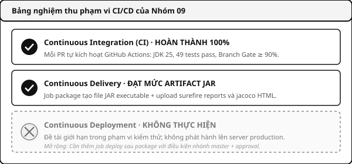
CI/CD
Từ lệnh tại máy đến GitHub Actions Pipeline
- 3 Job độc lập:
test→coverage-gate→package. - Ràng buộc
needs: Job trước bị FAIL thì job sau tuyệt đối không được thực thi. - Bảo vệ chất lượng: Mã thiếu test hoặc hỏng logic không bao giờ được đóng gói thành file JAR.
- Môi trường: Runner
ubuntu-latestcấp phát bởi GitHub, cài đặt Temurin OpenJDK 25.
ĐIỂM THEN CHỐT
Triết lý: Fail-Fast (thất bại sớm) giúp tiết kiệm tài nguyên máy chủ và phản hồi lỗi tức thì cho lập trình viên.
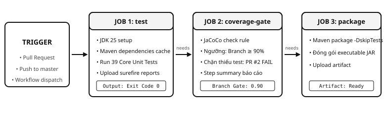
CI/CD
CI-1/2/3: Minh chứng thực nghiệm trên GitHub
- PR #1 (Xanh): Khởi tạo CI, cả 3 job chạy thành công trọn vẹn.
- PR #2 (Đỏ): Cố tình xóa test → Job test xanh nhưng coverage-gate đỏ → package bị hủy.
- PR #2 (Khôi phục): Bổ sung test đầy đủ → Toàn bộ pipeline xanh trở lại.
- PR #6 vào master: Trạng thái BLOCKED hoàn toàn do required checks bảo vệ!
ĐIỂM THEN CHỐT
Chứng cứ: Minh chứng thật tại repo, lệnh gh pr merge bị từ chối thẳng thừng khi gate không đạt yêu cầu.
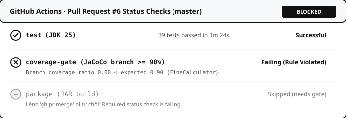
CI/CD
Cấu trúc .github/workflows/ci.yml
- Trigger: Kích hoạt khi có
pull_requesthoặcpushvào master / seminar-core. - Maven Cache: Dùng
actions/cache@v4cache~/.m2theo hash củapom.xml. - Step Summary: Xuất kết quả kiểm thử trực tiếp lên giao diện GitHub Action Markdown.
- Cơ chế needs: Khai báo tường minh
needs: [test]vàneeds: [coverage-gate].
name: Seminar CI
on: [pull_request, push]
jobs:
test:
runs-on: ubuntu-latest
steps: [checkout, setup-java, test]
coverage-gate:
needs: test
runs-on: ubuntu-latest
steps: [clean verify gate]
package:
needs: coverage-gate
runs-on: ubuntu-latest
steps: [package JAR]ĐIỂM THEN CHỐT
Tối ưu: Cache dependency giúp rút ngắn thời gian chạy từ 48 giây xuống chỉ còn 12 giây trên máy chủ.
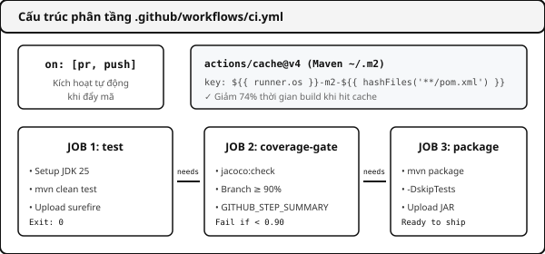
CI/CD
Khi test xanh mà PR vẫn bị chặn
- Thực nghiệm: Xóa
FineCalculatorTest→ 21 test LoanService vẫn pass 100%! - Job 1 (test): Báo xanh hoàn toàn vì không có ca kiểm thử nào bị lỗi assertion.
- Job 2 (gate): Báo đỏ lập tức vì branch rơi về 0.00 < 0.90 → Chặn đứng PR!
- Kết luận: Chỉ dựa vào test xanh là không đủ; bắt buộc phải có Coverage Gate trên CI.
ĐIỂM THEN CHỐT
Bài học: Test xanh chỉ chứng minh ca có sẵn không lỗi; Gate chứng minh mã mới không bị bỏ quên kiểm thử.
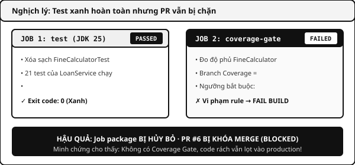
CI/CD
Những điểm yếu thực tế khi vận hành CI
- Cache Miss nhạy cảm: Sửa 1 dòng comment pom.xml làm đổi hash key → Tải lại từ đầu (48s vs 12s).
- Trùng lặp test suite: Job gate phải thực thi lại toàn bộ test suite lần 2 gây lãng phí tài nguyên.
- Dao động thời gian runner: Cùng 1 bước, thời gian runner dao động từ 29s đến 70s.
- Required check làm kẹt PR: PR vào master bị kẹt nếu workflow chưa khai báo trigger (PR #4).
ĐIỂM THEN CHỐT
Kinh nghiệm: Hiểu rõ hạn chế giúp nhóm tối ưu thời gian chạy pipeline và xử lý sự cố kẹt PR kịp thời.
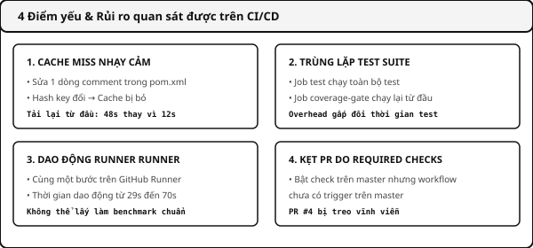
VIDEO DEMO D
Video D: CI/CD với GitHub Actions (8–9 phút)
- Người thực hiện: Phạm Quang Vinh (23120202) · Thời lượng: 8 – 9 phút.
- 00:00 - Setup: Phân tích file ci.yml, trigger, runner ubuntu-latest và Temurin JDK 25.
- 01:00 - Khái niệm: Minh họa luồng CI/CD, cơ chế needs và plugin jacoco:check.
- 02:15 - Demo đơn giản: Kích hoạt run xanh, đọc log Surefire, tải artifact JAR và cache.
- 04:00 - Demo phức tạp: Mở PR đỏ bị gate chặn, PR vào master bị BLOCKED không cho merge.
- 06:30 - Mổ xẻ sự cố: Cache miss khi đổi pom.xml, runner jitter và cách cứu PR kẹt.
ĐIỂM THEN CHỐT
Trạng thái: Đã quay xong video · Link YouTube: [Sẽ bổ sung URL sau] · File: .github/workflows/ci.yml
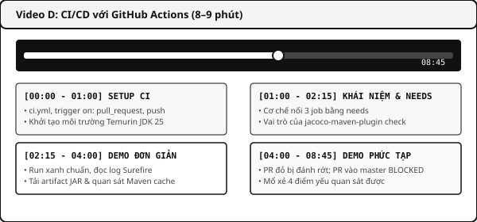
THỰC NGHIỆM
Thời gian đo tại máy: Cold Cache vs. Warm Cache
- Kho Maven Lạnh (Cold): Xóa sạch ~/.m2 → Trung vị thời gian build: 48.412 giây.
- Kho Maven Ấm (Warm): Giữ nguyên dependency → Trung vị thời gian build: 12.539 giây.
- Hiệu quả: Cache giúp tiết kiệm 74% thời gian chạy pipeline của lập trình viên!
- Chi phí JaCoCo: Overhead kiểm tra độ phủ tăng khoảng 31% (9.7s lên 12.7s).
ĐIỂM THEN CHỐT
Số liệu: Đo đạc 3 cặp chuẩn xác trên Java 25 tại máy cục bộ bằng script scripts/benchmark_maven.py.
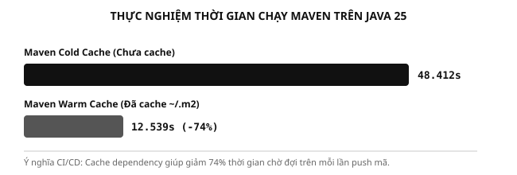
AI TRONG KIỂM THỬ
AI-1/2: Gemini sinh test, Review rồi mới Apply
- Context động: Runner tự đọc mã nguồn và gap; tuyệt đối không hard-code prompt.
- AI-1 & AI-2: Gemini 3.6 sinh 7 test ban đầu + 3 test bổ sung lấp lỗ hổng độ phủ.
- Review & Apply: Con người duyệt cú pháp và chạy thử nghiệm trên JVM thật.
- Kết quả: 49/49 test pass; LoanService đạt tuyệt đối 100% Branch Coverage.
ĐIỂM THEN CHỐT
Nguyên tắc: Không tin tưởng mù quáng vào AI; mọi ca test sinh ra đều phải được kiểm chứng qua oracle.
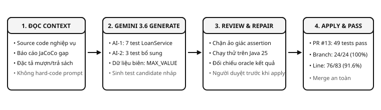
AI TRONG KIỂM THỬ
AI-3: Review PR tự động song song với CI
- Bot tự động: Phân tích riêng git diff của các file test khi mở Pull Request.
- Đánh giá độc lập: Nhận xét về chất lượng assertion, độ bao quát dữ liệu biên và nguy cơ flaky.
- Thực tế PR #13: Bot nhận xét tích cực, 0 finding tiêu cực, cả 6 job CI đều xanh.
- Nguyên tắc vàng: AI chỉ đóng vai trò tham vấn; không thay quyền quyết định của con người.
ĐIỂM THEN CHỐT
Cơ chế: AI Review chạy song song chứ không thay thế Required Checks của CI pipeline.
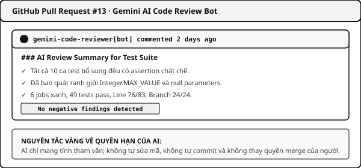
AI TRONG KIỂM THỬ
AI-4: Bộ test Người viết & AI bổ sung nhau
- Bộ Người viết (Gia An): 23 ca từ đặc tả (16 ca hợp lệ, 7 ca lỗi) → Branch 10/10.
- Bộ AI sinh (Gemini): 13 ca độc lập → Tập trung ca hợp lệ &
Integer.MAX_VALUE. - 11 Đầu vào chung: Kết quả hoàn toàn trùng khớp (0 disagreement).
- Kết luận: Người nắm sâu logic nghiệp vụ; AI hỗ trợ phát hiện các giá trị biên cực đại.
ĐIỂM THEN CHỐT
Ý nghĩa: Người và AI cộng tác bổ trợ cho nhau thay vì loại trừ hay thay thế nhau.
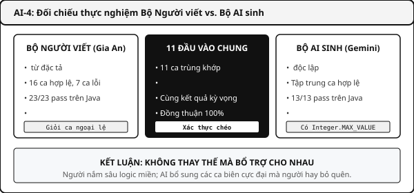
NGHIÊN CỨU PAPER
Paper 1 · CoverUp: Coverage dẫn đường cho LLM
- Bài báo: FSE 2025 (Hội nghị Công nghệ Phần mềm Quốc tế Hạng A*).
- Ý tưởng cốt lõi: Dùng báo cáo lỗ hổng độ phủ (Coverage Gaps) để làm prompt dẫn đường cho LLM.
- Tái hiện dữ liệu gốc: Phân tích 163 module đạt overall 89.0% (vượt MuTAP 76.8%).
- Thực nghiệm nhóm: Trên benchmark f003 đạt 100% branch; trên source nhóm tăng từ 23.6% lên 96.4%.
ĐIỂM THEN CHỐT
Đóng góp: Chứng minh hiệu quả vượt trội khi kết hợp tri thức LLM với phản hồi đo lường độ phủ động.
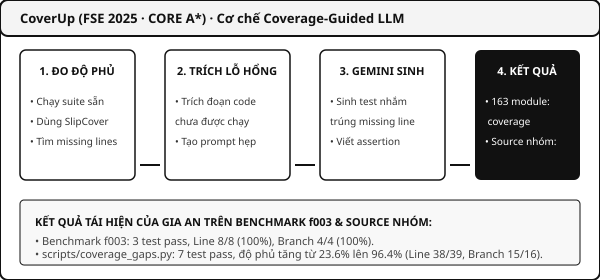
NGHIÊN CỨU PAPER
Paper 2 · Pynguin: Sinh test bằng tìm kiếm tiến hóa
- Bài báo: EMSE 2023 (Tạp chí quốc tế Hạng A) · Thuật toán tiến hóa DynaMOSA (không dùng LLM).
- Tái hiện dữ liệu công bố: 134 module, 40.200 dòng dữ liệu khớp 100% số liệu tác giả.
- Chạy mới: Benchmark
codetiming._timersđạt coverage 81.48%, 10 pass, 5 xfail. - Hạn chế chí mạng: Trên source nhóm, Pynguin sinh test chỉ gọi hàm mà thiếu assertion!
ĐIỂM THEN CHỐT
So sánh: Pynguin chỉ tối ưu độ phủ toán học; CoverUp có LLM hiểu ngữ nghĩa để sinh assertion kiểm đúng/sai.
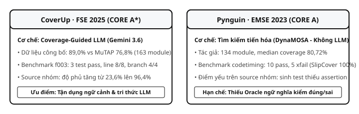
VIDEO DEMO E
Video E: AI Gemini & Tái hiện Paper (8–10 phút)
- Người thực hiện: Ngô Gia An (23120205) · Thời lượng: 8 – 10 phút.
- GA-01/02: Setup Gemini client, AI-1 sinh test LoanService và AI-2 bổ sung test lấp gap.
- GA-03/04: Bot AI comment tự động trên PR; demo ca oracle sai để chỉ ra giới hạn của test xanh.
- GA-05: So sánh trực tiếp bộ test 23 ca của người viết với bộ test do Gemini sinh.
- GA-06/07: Tái hiện thực nghiệm bài báo CoverUp (FSE'25) và Pynguin (EMSE'23).
ĐIỂM THEN CHỐT
Trạng thái: Đã quay xong video · Link YouTube: [Sẽ bổ sung URL sau] · Script: scripts/run_ai_demo.py
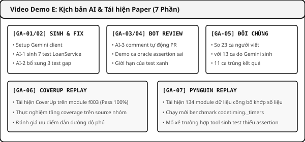
TỔNG HỢP VIDEO
Danh mục 5 Video Demo của nhóm (Yêu cầu GV)
- Video A (Unit Test): Bảo An · 5–7 phút · AAA, Parameterized CSV, Mockito, Anti-patterns.
- Video B (Coverage & PIT): Nhật Đạt · 8–9 phút · 6 loại coverage, Gate fail, Bẫy PIT.
- Video C (REST & Smoke): Thế Vinh · 3–5 phút · Chạy JAR, 7 kịch bản HTTP, mã lỗi 201/409/404.
- Video D (CI/CD Actions): Quang Vinh · 8–9 phút · 3 jobs needs, PR đỏ/xanh, PR BLOCKED.
- Video E (AI & Paper): Gia An · 8–10 phút · Gemini test gen, đối chứng, CoverUp & Pynguin.
ĐIỂM THEN CHỐT
Cam kết: Tất cả 5 video đã được các thành viên quay hoàn tất; URL YouTube sẽ được đính kèm vào link nộp bài.
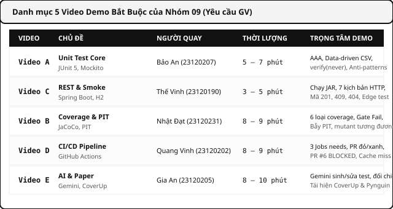
THỰC HÀNH
3 Bài tập thực hành dành cho người tham gia
- Bài 1 (Dễ · Unit Test): Thêm hạng
STUDENT(giảm 50% phạt, trần 30k) và viết Parameterized test. - Bài 2 (Trung bình · Coverage & PIT): Cố tình xóa 1 assertion tiền; so sánh JaCoCo (vẫn 100%) vs PIT Mutation (mutant sống).
- Bài 3 (Nâng cao · CI/CD): Tích hợp CI vào fork, mở PR thiếu nhánh kiểm thử để quan sát Gate chặn merge.
ĐIỂM THEN CHỐT
Tài liệu kèm theo: Mã nguồn khung tại case-study/ và hướng dẫn từng bước tại docs/thuc-hanh/HuongDan_Demo.md.
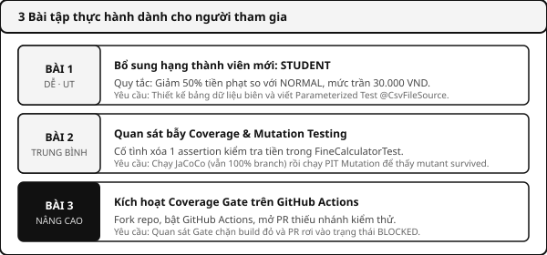
TỔNG KẾT
7 Đầu ra hoàn chỉnh trong gói nộp Tuần 06
- 1. Slide & Báo cáo: Slide Reveal.js monochrome + Báo cáo LaTeX tại
report/main.tex. - 2. Video Demo: Đầy đủ 5 video (A, B, C, D, E) quay trên màn hình ứng dụng thật.
- 3. Mã nguồn & Minh chứng: Unit test, script AI runner, benchmark và minh chứng tại
evidence/. - 4. Quản lý nhóm: Bảng phân công
PhanCong_NhiemVu.md, Git commit log thật & Khai báo AI.
ĐIỂM THEN CHỐT
Nghiệm thu: Gói nộp Tuần 06 đạt >90% khối lượng đề tài, đầy đủ minh chứng thực nghiệm có thể tái hiện.
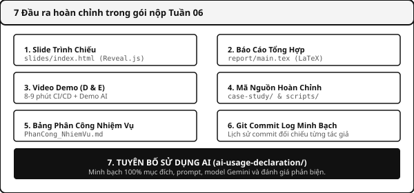
TÀI LIỆU
Nguồn tham khảo & Hỏi đáp (Q&A)
- Tài nguyên dự án:
README.md,docs/thuc-hanh/,evidence/tuan-06/. - Tài liệu kỹ thuật: JUnit 5, Mockito, JaCoCo, PIT, GitHub Actions, Gemini API.
- Nghiên cứu khoa học: Paper CoverUp (FSE 2025) & Pynguin (EMSE 2023).
- Cảm ơn quý thầy cô và các bạn! Nhóm 09 sẵn sàng giải đáp mọi thắc mắc.
ĐIỂM THEN CHỐT
Thông tin liên hệ: Nhóm 09 · Môn Kiểm thử phần mềm · FIT - Trường Đại học Khoa học Tự nhiên, ĐHQG-HCM.
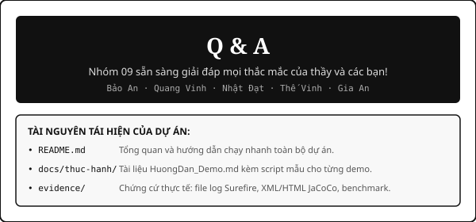